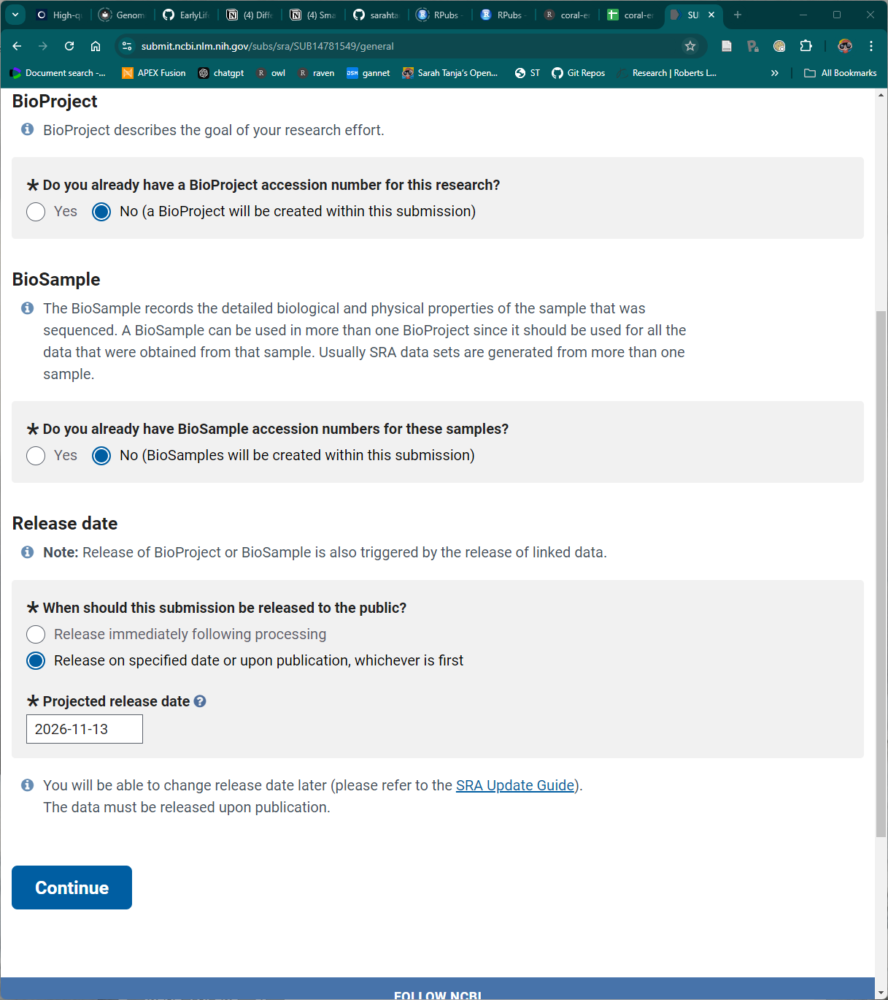

Background research
Watch this 10min video tutorial: How to Submit to SRA, A Beginner’s Guide
Read the SRA Submission Wizard Help page
Checkout info link on metadata for microbiome datasets Metagenomes (Microbiomes)
Log in to NCBI
Navigate to the NCBI Submission Portal: https://submit.ncbi.nlm.nih.gov/
Log-in through a partner sign-in, or sign-up directly with NCBI to create an account.

I signed in using my existing ORC-ID account, and authorized NCBI to access my ORCID record.

Using my orcid, I created a new NCBI account.
I was prompted to update my profile and confirm my primary email address in order to be able to submit to SRA.
Once at the Submission portal and logged-in, select your sequence type (16S rRNA, genome, ITS, SRA)…. For RNA-seq click on SRA to continue to the Sequence Read Archive (SRA) submission portal: https://submit.ncbi.nlm.nih.gov/about/sra/
Click SUBMIT to start the submission process.
Click New Submission
There are 5 steps to submission:
1. Submitter contact info (fill this out)
2. General Info

Click CONTINUE
3. Project Info
Project Title
Public description
Grants
4. Biosample Type
Typed in Montipora capitata
Under displayed NCBI packages I selected ‘Invertebrate’

- Clicked CONTINUE
5. Biosample Attributes
Use built-in table editor
The following are the columns:
Sample Name
- Here I put the sample_id
Sample title
- Same as Sample Name
BioProject accession : left blank
Organism
See Organism information on Metagenome (Microbiome)
I explored the list of NCBI existing taxonomy nodes of organismal metagenomes and found coral metagenome
I put
coral metagenomedown under organism
isolate : left blank
breed : not applicable
host
- Montipora capitata
isolation source
- I put ‘developing coral embryos from (n) distinct bundle-bundle crosses’
collection date
- date each cross was culled
geographic location
- USA:Oahu, Kaneohe Bay
tissue
- whole embryo
age
- hours post fertilization (4, 9, 14)
altitude : blank
biomaterial provider
- Dr. Padilla-Gamiño, University of Washington, School of Aquatic and Fishery Sciences, Box 355020, Seattle, WA 98195
collected by
- Sarah Tanja, Katherine Lasdin
depth : blank
development stage
- cleavage, prawn chip, or early gastrula
broad-scale environmental contex
- coral reef biome
host tissue sampled : blank
identified by: blank
latitude and longitude
- 21.431972 N 157.787472 W
sex : blank
specimen voucher : blank
temperature : blank
sample description
- description of pooled samples
PVC leachate treatment concentration level
PVC leachate treatment concentration mg/L
pooled crosses
Click CONTINUE
6. SRA Metadata
I provided metadata with the built-in table editor, and copied columns from my metadata google sheet into the NIH Submission Portal.
7. File Upload

SRA file transfer protocol directions here
Expand the FTP instructions section to follow instuctions mput
From the R terminal in the directory where the fastq.gz and fastq.gz.md5 files are located…
Start your FTP session:
`ftp ftp-private.ncbi.nlm.nih.gov`Log in with your username and password provided in the FTP instructions drop-down
cd into your uploads directory as described in the FTP instructions drop-down
make a new directory for your upload (I use the same name as the git repo for the project)
Disable the interactive prompt by typing:
promptUse
mputto upload all files:mput *fastq*Each file will show
Transfer completeas it is uploaded
When finished, exit the FTP session:
bye
Wait 10 minutes
On the SRA webpage, Click Select preload folder
Click Refresh folders
If some files were not transferred…
You can select specific files to transfer by using
put filename
Once all errors are corrected and files uploaded and they match your metadata, submission will go through a day of processing and you’ll get a confirmation email with your PRJ ID to include in publication.